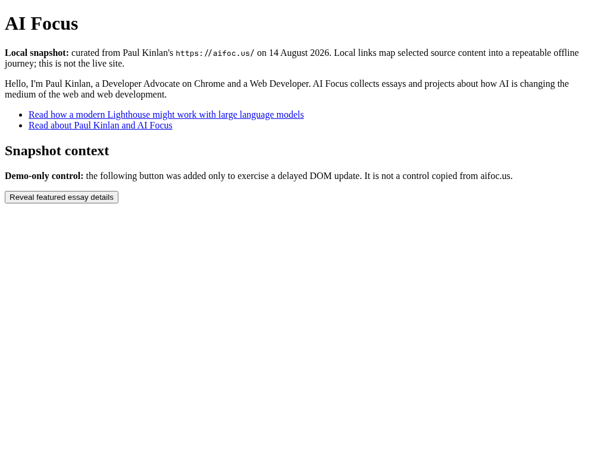
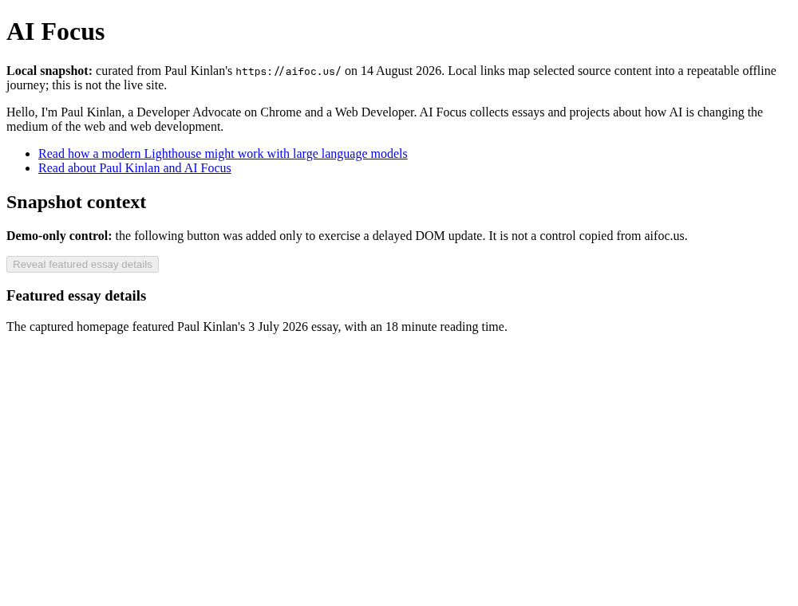
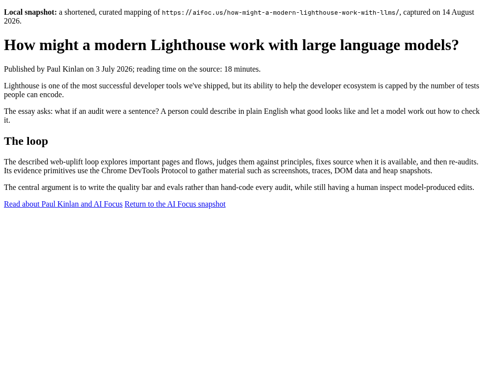
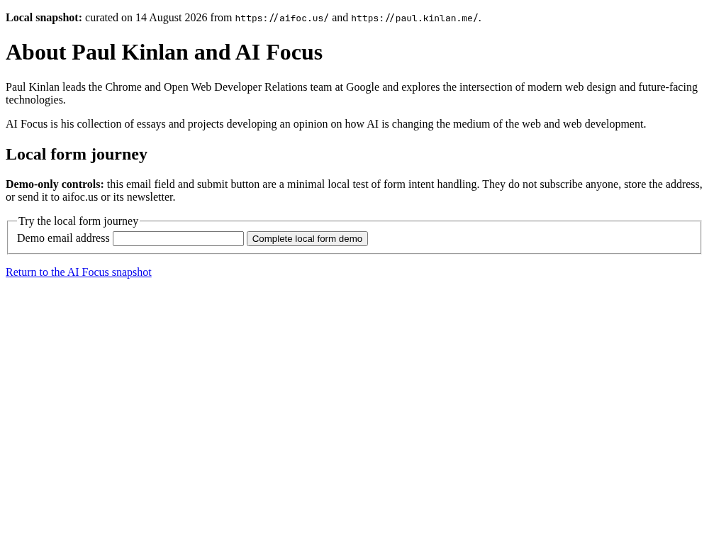
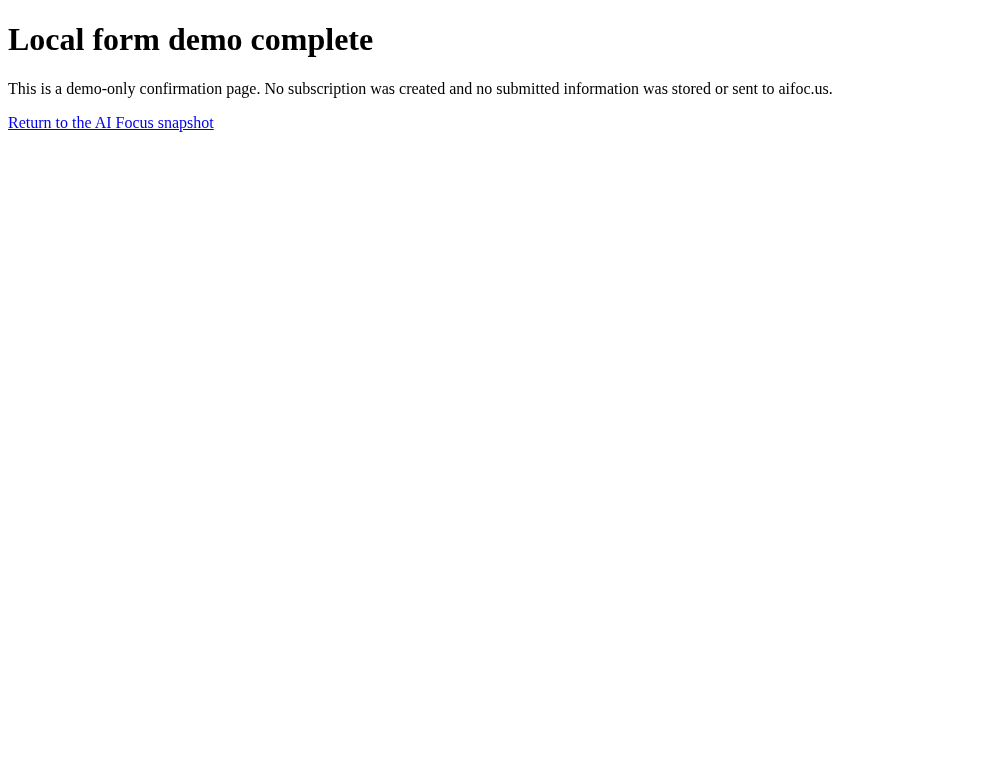
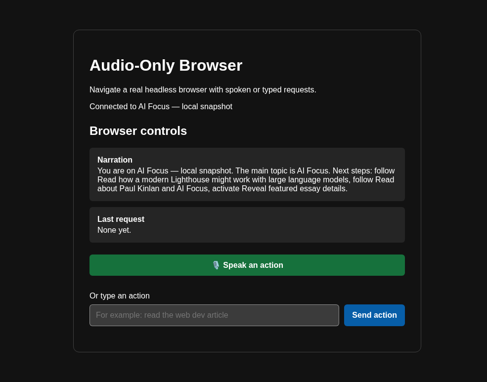
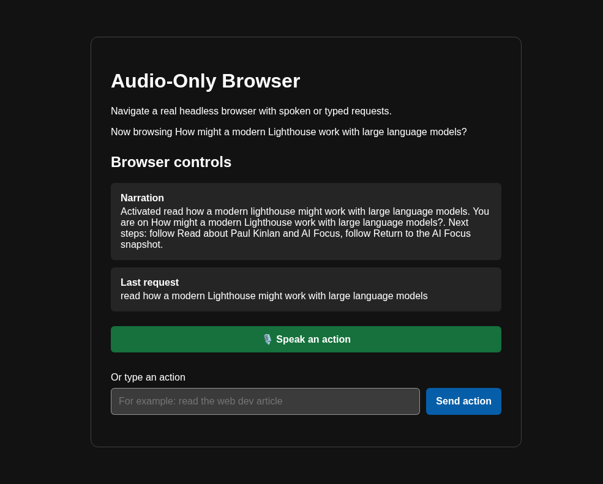

Public / static
This GitHub Pages site
- Project overview and source links
- Curated static sample pages
- Seven reviewed evidence images
Audio-first browsing research
A local Deno controller turns a page into a compact semantic snapshot, matches a natural-language request to a real control, and drives an allowlisted Chrome session over CDP.
The sample above is static. It demonstrates the pages and controls, not the audio controller.
“Read the featured essay”
An honest deployment boundary
The working prototype requires a Deno process, a Chrome binary, loopback-only endpoints, and Chrome DevTools Protocol access. A static host provides none of those things, so this public surface makes no controller or loopback requests.
Run the repository locally for intent resolution, narration, voice seams, and live browser control. Use this site to inspect the curated journey and the reviewed browser evidence.
What runs where
Public / static
Private to your machine
A deterministic sample
The static copy comes from the repository’s tracked sample site. Every extra interaction is labelled demo-only.
Navigate through a curated mapping of Paul Kinlan’s AI Focus essay.
Use the clearly labelled demo button and see delayed content appear.
Submit a synthetic address to a local confirmation page. Nothing is sent or stored.
Curated from public work
Browser-driven proof
Captured by the integration journey in a real Chrome session. These are evidence of the local prototype—not a claim that it runs on this static page.






